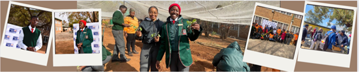

PROMOTING ACCESS TO FRESH FRUIT AND VEGETABLES THROUGH SUSTAINABLE FOOD GARDENING.
Food insecurity is becoming a big problem in Southern Africa, and we think that we can help end food insecurity through educating communities, schools and households about food gardens.
Our Mission
As first-year students at Tshwane University of Technology's Faculty of ICT, our group was assigned a project to investigate the theme: Food Security Through Garden Projects.
This website presents our summaries of food garden case studies found online and provides our recommendations for how the community can engage in these projects to secure food.
Your Investigation Steps
- Internet Research: We used videos, articles, and websites to find established food gardens.
- Case Study Analysis: We selected and documented five diverse food garden projects.
- Data Summaries: We compiled our findings into simple charts and summaries.
- Developing Recommendations: Based on our research, we developed suggestions for improvement.
A Glimpse into Our Research
Our research focused on 5 distinct food garden projects. Below are a few examples.
Case Study 1: LR Schmidt Primary School Garden - Genadendal Valley, Western Cape

This food garden was launched by the Humane Society International/Africa's (HSI/Africa) Green Monday SA programme. It has enabled LR Schmidt Primary School and Emil Weder Secondary School to create a food garden that enhances the nutritional quality of meals by offering a variety of plant-based options.
The nutritious plant-based options include a protein-rich soy curry with mixed vegetables and herbs, a colourful salad made from cabbage, carrots, raisins, and beetroot with homemade mayo, and sweet potato chocolate brownies as a healthy dessert option.
This food garden initiative feeds over 500 learners daily by growing and cooking a range of vegetables including spinach, cabbage, carrots, turnips, spring onions, herbs, sweet potato, leeks and cauliflower.
Most of the food grown in this garden is used to feed the learners, whereas a minority (40%) is sold to the local community to fund important pantry items like spices, vinegar, salt and pepper etc
Case Study 2: Ingqaizivele Secondary School
This school is in Thembisa, Ekurhuleni, and has a massive food garden that is well maintained by the dedicated community members of Thembisa. The food garden's produce aids the school's feeding scheme. Excess produce is then sold to fund things like the purchase of compost, seedlings and better access to water.
Case Study 3: Peter's Gardening Projects

Peter Molepo, from Limpopo noticed a gap in knowledge when it came to agricultural knowledge in his community, and he therefore came up with a solution that not only attempts to fill in the gap, but also, to help fight against food insecurity in his community.
He then approached schools in his community and successfully convinced them to allow him to setup food gardens in the unused land that the schools had. He was then able to setup those food gardens that feed school children on a daily basis, and gardens that also educate learners about agriculture.
Peter was then able to extend his projects through the support of Food & Trees for Africa (FTFA) and funders Public Investment Corporation (PIC), by starting food gardens for his community.
Case Study 4: The Missionvale Care Centre (MCC)

The Missionvale Care Centre is in Gqeberha, and is run by Xoliswa Buzo and a skilled team, which managed to produce R400 000 in produce (based on retail value). Their food garden grows a wide variety of vegetables, including beetroot, spinach, cauliflower, carrots and tomatoes, to name a few. The harvest then goes to food parcels, their culinary school and their “Swap shop”. Their garden also has a “nutrition unit”, which distributes bread and soup powders daily, which feeds the people in the surrounding community.
Their initiative aids in the fight against food insecurity, but it has come across some issues, with the main one being water shortages, however, they have found a way to work around this by layering hay around the growing produce to trap moisture, and by also collecting rainwater in a Jojo tank to use when watering the garden.
Case Study 5: Youth-led urban agriculture in Khayelitsha

In Khayelitsha, two gardens have been created by members of the youth. The first garden was created in 2020, during the pandemic, as an effort to fight against food insecurity and to also create jobs for the creators and other people in the community.
One of the gardens has around 30 beds that grow a wide variety of crops, including: beetroot, carrots, spinach, pumpkins, potatoes, radishes, peas, lettuce and herbs. Around 30% of the produce is donated to the local community centers monthly, which helps to put food on the table for many.
The rest of the produce is sold so that the garden can financially sustain itself and to also pay the gardeners.
The second garden was created in 2024 and can be found on the land of an early child development center. The garden feeds the community as well.
Findings
Challenges Faced in Home, School, and Community Gardens
Poor Access to Water
South Africa receives only half of the global average rainfall, making water scarce. Poor infrastructure and water management worsen the issue. Gardens with limited water access often face inconsistent plant growth and crop failure. Sustainable solutions like rainwater harvesting and greywater reuse are needed to support long-term gardening success.
Lack of Gardening Knowledge and Skills
Many gardens fail due to limited knowledge of soil care, pest control, and seasonal planting. Without proper skills or guidance, gardens become unproductive and neglected. The loss of traditional gardening knowledge, especially in urban areas, worsens this challenge.
Soil Degradation and Low Fertility
Urban gardens often suffer from poor or contaminated soil, leading to weak plant growth and low yields. If not addressed through proper soil management, gardening efforts become unsustainable over time.
Seasonal Changes
Planting without considering seasons leads to poor results. For example, growing summer crops like tomatoes in winter causes them to wither. Lack of seasonal planning wastes resources and discourages gardeners when yields are low.